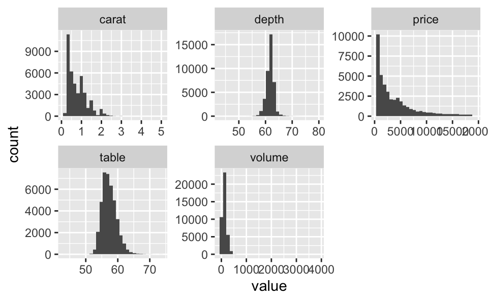

1 Vorbereitung
1.1 Forschungsfrage
Welche Prädiktoren lassen den Preis einen Diamanten vorhersagen?
Wir möchten also den Preis von Diamanten - basierend auf einer Reihe von Prädiktoren - möglichst exakt vorhersagen (\(R^2\)).
1.2 Aufgabe
Berechnen Sie die Vorhersagen und auch das R-Quadrat im Test-Datensatz!
1.3 Pakete laden
library(tidyverse)
library(fastDummies)
library(janitor)
library(corrr)
library(ggfortify)
library(modelr)
library(tidymodels)
library(leaps)1.4 Daten laden
train <- read_csv("https://raw.githubusercontent.com/sebastiansauer/2021-sose/master/data/diamonds/diamonds_train.csv")
test <- read_csv("https://raw.githubusercontent.com/sebastiansauer/2021-sose/master/data/diamonds/diamonds_test.csv")
solution <- read_csv("https://raw.githubusercontent.com/sebastiansauer/2021-sose/master/data/diamonds/diamonds_solution.csv")1.5 ID-Spalte ergänzen
test <-
test %>%
mutate(id = 1:nrow(.))solution <-
solution %>%
mutate(id = 1:nrow(.))2 Vorwissen
Etwas Recherche oder Vorwissen zeigt, dass beim Diamantenpreis die “4C” entscheidend sind: Color, Clarity, Carat, Cut.
Entsprechend sind diese 4 Prädiktoren gute Kandidaten für ein Modell.
Tipp: Haben zwei Prädiktoren jeweils einen starken Haupteffekt (der Effekt einer einzelnen Variablen im Gegensatz zu einem Interaktionseffekt), macht es häufig Sinn, ihre Interaktion mitaufzunehmen (s. Gelman und Hill, 2007, Kap. 3 oder 4). Der Umkehrschluss gilt nicht.
3 Woran erkennt man einen “starken Haupteffekt”?
- Am Zuwachs von \(R^2\), wenn man den Prädiktor mitaufnimmt
- Am Regressiongewicht – aber nur, wenn die Prädiktoren (z-)standardisiert sind.
4 Wichtige Prädiktoren
4.1 train2
train2 <- train %>%
dummy_cols(remove_selected_columns = TRUE,
select_columns = c("cut", "color", "clarity"),
remove_first_dummy = TRUE) %>%
clean_names()train2 %>% glimpse()## Rows: 40,453
## Columns: 24
## $ carat <dbl> 0.23, 0.31, 0.24, 0.26, 0.22, 0.23, 0.30, 0.23, 0.22, 0.…
## $ depth <dbl> 61.5, 63.3, 62.8, 61.9, 65.1, 59.4, 64.0, 62.8, 60.4, 60…
## $ table <dbl> 55, 58, 57, 55, 61, 61, 55, 56, 61, 62, 58, 54, 54, 56, …
## $ price <dbl> 326, 335, 336, 337, 337, 338, 339, 340, 342, 345, 345, 3…
## $ x <dbl> 3.95, 4.34, 3.94, 4.07, 3.87, 4.00, 4.25, 3.93, 3.88, 3.…
## $ y <dbl> 3.98, 4.35, 3.96, 4.11, 3.78, 4.05, 4.28, 3.90, 3.84, 3.…
## $ z <dbl> 2.43, 2.75, 2.48, 2.53, 2.49, 2.39, 2.73, 2.46, 2.33, 2.…
## $ cut_good <int> 0, 1, 0, 0, 0, 0, 1, 0, 0, 0, 0, 0, 1, 1, 0, 1, 0, 0, 0,…
## $ cut_ideal <int> 1, 0, 0, 0, 0, 0, 0, 1, 0, 0, 0, 1, 0, 0, 0, 0, 0, 0, 0,…
## $ cut_premium <int> 0, 0, 0, 0, 0, 0, 0, 0, 1, 1, 1, 0, 0, 0, 0, 0, 0, 0, 0,…
## $ cut_very_good <int> 0, 0, 1, 1, 0, 1, 0, 0, 0, 0, 0, 0, 0, 0, 1, 0, 1, 1, 1,…
## $ color_e <int> 1, 0, 0, 0, 1, 0, 0, 0, 0, 1, 1, 0, 0, 0, 0, 0, 1, 0, 0,…
## $ color_f <int> 0, 0, 0, 0, 0, 0, 0, 0, 1, 0, 0, 0, 0, 0, 0, 0, 0, 0, 0,…
## $ color_g <int> 0, 0, 0, 0, 0, 0, 0, 0, 0, 0, 0, 0, 0, 0, 0, 0, 0, 0, 0,…
## $ color_h <int> 0, 0, 0, 1, 0, 1, 0, 0, 0, 0, 0, 0, 0, 0, 0, 0, 0, 1, 0,…
## $ color_i <int> 0, 0, 0, 0, 0, 0, 0, 0, 0, 0, 0, 1, 0, 0, 0, 1, 0, 0, 0,…
## $ color_j <int> 0, 1, 1, 0, 0, 0, 1, 1, 0, 0, 0, 0, 1, 1, 1, 0, 0, 0, 1,…
## $ clarity_if <int> 0, 0, 0, 0, 0, 0, 0, 0, 0, 0, 0, 0, 0, 0, 0, 0, 0, 0, 0,…
## $ clarity_si1 <int> 0, 0, 0, 1, 0, 0, 1, 0, 1, 0, 0, 0, 1, 1, 1, 0, 0, 0, 1,…
## $ clarity_si2 <int> 1, 1, 0, 0, 0, 0, 0, 0, 0, 1, 0, 1, 0, 0, 0, 1, 0, 0, 0,…
## $ clarity_vs1 <int> 0, 0, 0, 0, 0, 1, 0, 1, 0, 0, 0, 0, 0, 0, 0, 0, 0, 1, 0,…
## $ clarity_vs2 <int> 0, 0, 0, 0, 1, 0, 0, 0, 0, 0, 0, 0, 0, 0, 0, 0, 1, 0, 0,…
## $ clarity_vvs1 <int> 0, 0, 0, 0, 0, 0, 0, 0, 0, 0, 0, 0, 0, 0, 0, 0, 0, 0, 0,…
## $ clarity_vvs2 <int> 0, 0, 1, 0, 0, 0, 0, 0, 0, 0, 0, 0, 0, 0, 0, 0, 0, 0, 0,…4.2 test2
test2 <- test %>%
dummy_cols(remove_selected_columns = TRUE,
select_columns = c("cut", "color", "clarity")) %>%
clean_names()train2 %>%
correlate() %>%
focus(price) %>%
arrange(-abs(price)) %>%
filter(abs(price) > 0.1)## # A tibble: 7 x 2
## term price
## <chr> <dbl>
## 1 carat 0.922
## 2 x 0.886
## 3 y 0.860
## 4 z 0.858
## 5 clarity_si2 0.128
## 6 table 0.128
## 7 color_e -0.1035 Feature Engineering
Das Volumen berechnet sich als das Produkt von Länge, Breite und Höhe:
train2 %>%
mutate(volume = x*y*z) %>%
correlate() %>%
focus(volume)## # A tibble: 24 x 2
## term volume
## <chr> <dbl>
## 1 carat 0.970
## 2 depth 0.00576
## 3 table 0.168
## 4 price 0.897
## 5 x 0.950
## 6 y 0.975
## 7 z 0.942
## 8 cut_good 0.0257
## 9 cut_ideal -0.150
## 10 cut_premium 0.114
## # … with 14 more rows5.1 train3/test3
train3 <-
train2 %>%
mutate(volume = x*y*z)test3 <-
test2 %>%
mutate(volume = x*y*z) 5.2 Korrelation
train3 %>%
correlate() %>%
focus(price) %>%
arrange(-abs(price)) %>%
filter(abs(price) > 0.1)## # A tibble: 8 x 2
## term price
## <chr> <dbl>
## 1 carat 0.922
## 2 volume 0.897
## 3 x 0.886
## 4 y 0.860
## 5 z 0.858
## 6 clarity_si2 0.128
## 7 table 0.128
## 8 color_e -0.1035.3 preds_important
preds_important <-
train3 %>%
correlate() %>%
focus(price) %>%
arrange(-abs(price)) %>%
filter(abs(price) > 0.1) %>%
filter(!(term %in% c("x", "y", "z"))) %>%
pull(term)Wenn man Volumen im Modell hat, sind x, y und z vermutlich unnötig.
preds_important## [1] "carat" "volume" "clarity_si2" "table" "color_e"6 Funktionale Form der Zusammenhänge
train3 %>%
select(carat, depth, table, price, volume) %>%
pivot_longer(cols = -price) %>%
ggplot() +
aes(x = value, y = price) +
geom_point() +
geom_smooth() +
facet_wrap(~ name, scales = "free")7 Filtern
train3 %>%
select(carat, depth, table, price, volume) %>%
pivot_longer(cols = everything()) %>%
ggplot() +
aes(x = value) +
geom_histogram() +
facet_wrap(~ name, scales = "free")
7.1 train4
train4 <-
train3 %>%
filter(carat < 2.5)test4 <- test38 Transformationen
8.1 Log-Transformation (train5)
train5 <-
train4 %>%
mutate(price_log = log(price),
carat_log = log(carat),
carat_cuberoot = carat^(1/3)) %>%
select(-price)test5 <-
test4 %>%
mutate(price_log = log(price),
carat_log = log(carat),
carat_cuberoot = carat^(1/3)) %>%
select(-price)8.2 z-Transformation (train6)
train6 <-
train5 %>%
mutate(across(
.cols = c(carat:z, volume),
.fns = ~ (.x - mean(.x)) / sd(.x),
.names = "{col}_z"
))test6 <-
test5 %>%
mutate(across(
.cols = c(carat:z, volume),
.fns = ~ (.x - mean(.x)) / sd(.x),
.names = "{col}_z"
))Allerdings sind die negativen Werte nicht mehr für das Logarithmieren zu gebrauchen.
9 Vorhersage-Modellierung
9.1 lm1
lm1 <-
train4 %>%
select(any_of(preds_important), price) %>%
filter(price > 0) %>%
lm(log(price) ~ . , data = .)summary(lm1)$adj.r.squared## [1] 0.8675275coef(lm1)## (Intercept) carat volume clarity_si2 table
## 6.3766605253 2.0651716786 0.0001605885 -0.2333964989 -0.0040103115
## color_e
## 0.09784726059.2 lm2
lm2 <-
train4 %>%
select(any_of(preds_important), price) %>%
lm(log(price) ~ log(carat) + clarity_si2 + table + color_e, data = .)summary(lm2)$adj.r.sq## [1] 0.9448439coef(lm2)## (Intercept) log(carat) clarity_si2 table color_e
## 9.17691153 1.74672853 -0.27351898 -0.01166313 0.09842462autoplot(lm2, which = 1) # ggfortify9.3 lm3
lm3 <-
train4 %>%
select(any_of(preds_important), price) %>%
lm(log(price) ~ log(carat) + clarity_si2 + color_e + log(carat)*clarity_si2 + clarity_si2*color_e, data = .)summary(lm3)$adj.r.sq## [1] 0.9444729autoplot(lm3, which = 1) + # ggfortify
labs(subtitle = "lm3")9.4 lm4
lm4 <-
train4 %>%
select(any_of(preds_important), price) %>%
lm(log(price) ~ log(carat) + clarity_si2 + color_e,
data = .)summary(lm4)$adj.r.sq## [1] 0.9442168autoplot(lm4, which = 1) + # ggfortify
labs(subtitle = "lm4")9.5 lm5
lm5 <-
train4 %>%
select(any_of(preds_important), price) %>%
lm(price ~ .,
data = .)summary(lm5)$adj.r.sq## [1] 0.8715234autoplot(lm5, which = 1) + # ggfortify
labs(subtitle = "lm5")9.6 lm6
lm6 <-
train4 %>%
lm(price ~ .,
data = .)summary(lm6)$adj.r.sq## [1] 0.9267716autoplot(lm6, which = 1) + # ggfortify
labs(subtitle = "lm6")9.7 lm7: regsubsets
lm7 <- regsubsets(price_log ~ .,
nvmax = 27,
data = train5)lm7_sum <- summary(lm7)
tibble(adjr2 = lm7_sum$adjr2,
id = 1:length(lm7_sum$adjr2)) %>%
ggplot() +
aes(x = id, y = adjr2) +
geom_point() +
geom_line()preds_lm7 <-
coef(lm7, 12) %>%
names() %>%
purrr::discard(~ identical(.x, "(Intercept)"))
preds_lm7## [1] "color_g" "color_h" "color_i" "color_j" "clarity_if"
## [6] "clarity_si1" "clarity_si2" "clarity_vs1" "clarity_vs2" "clarity_vvs1"
## [11] "clarity_vvs2" "carat_log"Dieses Modell mit rlength(preds_lm7)` Prädiktoren könnte sinnvoll sein: hohes R-Quadrat, aber noch vor der “Abflachung”, also sparsam in den Prädiktoren.
9.7.1 Achtung
Automatisierte Verfahren wie die Best-Subset-Analyse können auch zu falschen Ergebnissen führen; man sollte sich nicht blindlings verlassen.
9.8 lm8
lm8 <-
train5 %>%
select(any_of(preds_lm7), price_log) %>%
lm(price_log ~ ., .)summary(lm8)$adj.r.sq## [1] 0.9810556coef(lm8)## (Intercept) color_g color_h color_i color_j clarity_if
## 7.9215605 -0.1029971 -0.1918110 -0.3130449 -0.4543327 1.1317256
## clarity_si1 clarity_si2 clarity_vs1 clarity_vs2 clarity_vvs1 clarity_vvs2
## 0.6013193 0.4359457 0.8229876 0.7549031 1.0308347 0.9610091
## carat_log
## 1.87737799.9 lm9: Schrittweise Regression
lm9 <- regsubsets(price ~ .,
method = "forward",
data = train3)(Hier nicht weiter ausgeführt)
10 Predict
10.1 Vorhersagen hinzufügen
test6 <-
test5 %>%
add_predictions(lm1, var = "pred_lm1") %>%
add_predictions(lm2, var = "pred_log_lm2") %>%
add_predictions(lm3, var = "pred_log_lm3") %>%
add_predictions(lm4, var = "pred_log_lm4") %>%
add_predictions(lm5, var = "pred_lm5") %>%
add_predictions(lm6, var = "pred_lm6") %>%
add_predictions(lm8, var = "pred_log_lm8")test6 %>%
select(contains("pred")) %>%
slice(1:5)## # A tibble: 5 x 7
## pred_lm1 pred_log_lm2 pred_log_lm3 pred_log_lm4 pred_lm5 pred_lm6 pred_log_lm8
## <dbl> <dbl> <dbl> <dbl> <dbl> <dbl> <dbl>
## 1 6.67 5.84 5.90 5.89 -624. -394. 5.59
## 2 6.69 5.95 6.06 6.05 -736. 421. 5.99
## 3 6.75 6.34 6.36 6.35 -133. -778. 6.04
## 4 6.65 6.02 6.03 6.02 -477. -237. 5.96
## 5 6.58 6.23 6.11 6.19 -1078. -2994. 5.7010.2 Zurücktransformieren
Delogarithmieren, d.h. die Exp.funktion anwenden:
test7 <-
test6 %>%
mutate(pred_lm2 = exp(pred_log_lm2),
pred_lm3 = exp(pred_log_lm3),
pred_lm4 = exp(pred_log_lm4),
pred_lm8 = exp(pred_log_lm8))test7 %>%
select(contains("pred")) %>%
slice(1:5)## # A tibble: 5 x 11
## pred_lm1 pred_log_lm2 pred_log_lm3 pred_log_lm4 pred_lm5 pred_lm6 pred_log_lm8
## <dbl> <dbl> <dbl> <dbl> <dbl> <dbl> <dbl>
## 1 6.67 5.84 5.90 5.89 -624. -394. 5.59
## 2 6.69 5.95 6.06 6.05 -736. 421. 5.99
## 3 6.75 6.34 6.36 6.35 -133. -778. 6.04
## 4 6.65 6.02 6.03 6.02 -477. -237. 5.96
## 5 6.58 6.23 6.11 6.19 -1078. -2994. 5.70
## # … with 4 more variables: pred_lm2 <dbl>, pred_lm3 <dbl>, pred_lm4 <dbl>,
## # pred_lm8 <dbl>11 Test-R2
solutions2 <-
solution %>% select(id, price)
r2_tab <-
test7 %>%
select(id, contains("pred")) %>%
left_join(solutions2) %>%
summarise(r2_lm1 = rsq_vec(price, pred_lm1),
r2_lm2 = rsq_vec(price, pred_lm2),
r2_lm3 = rsq_vec(price, pred_lm3),
r2_lm4 = rsq_vec(price, pred_lm4),
r2_lm5 = rsq_vec(price, pred_lm5),
r2_lm6 = rsq_vec(price, pred_lm6),
r2_lm8 = rsq_vec(price, pred_lm8)) %>%
pivot_longer(everything(),
names_to = "model",
values_to = "r2")
r2_tab %>%
arrange(-r2)## # A tibble: 7 x 2
## model r2
## <chr> <dbl>
## 1 r2_lm8 0.957
## 2 r2_lm6 0.920
## 3 r2_lm5 0.866
## 4 r2_lm1 0.864
## 5 r2_lm3 0.857
## 6 r2_lm2 0.856
## 7 r2_lm4 0.85612 Fazit
Das beste Modell ist also:
r2_tab %>%
slice_max(r2, n = 1)## # A tibble: 1 x 2
## model r2
## <chr> <dbl>
## 1 r2_lm8 0.957